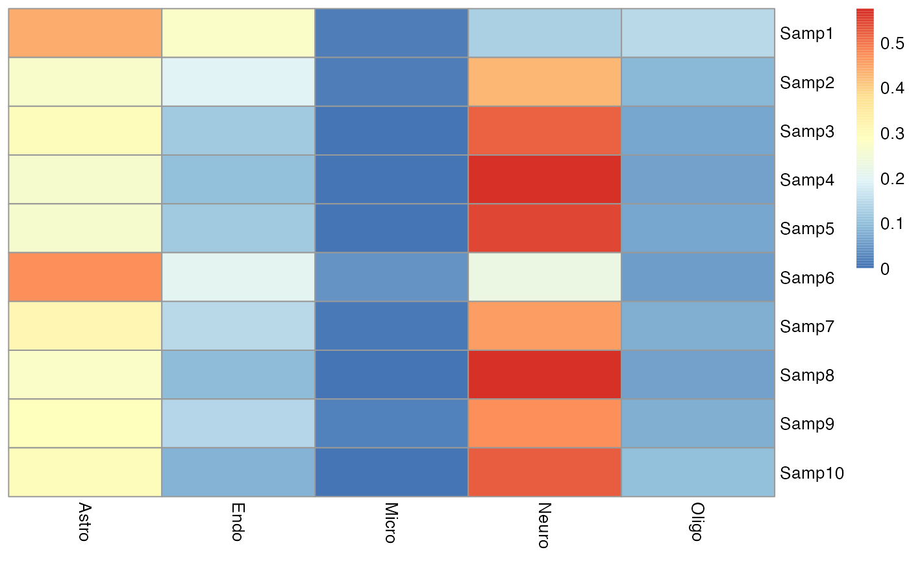

EnsDeconv.Rmd
# install devtools if necessary
if (!"devtools" %in% rownames(installed.packages())) {
install.packages('devtools')
}
if (!requireNamespace("BiocManager", quietly = TRUE))
install.packages("BiocManager")
if (!"MuSiC" %in% rownames(installed.packages())) {
devtools::install_github("xuranw/MuSiC")
}
if (!"BisqueRNA" %in% rownames(installed.packages())) {
devtools::install_github("cozygene/bisque")
}
if (!"EPIC" %in% rownames(installed.packages())) {
devtools::install_github("GfellerLab/EPIC", build_vignettes=TRUE)
}
if (!"DeconRNASeq" %in% rownames(installed.packages())) {
BiocManager::install("DeconRNASeq")
}
if (!"Seurat" %in% rownames(installed.packages())) {
install.packages("Seurat", dependencies = TRUE, repos="http://cran.r-project.org")
}
if (!"dtangle" %in% rownames(installed.packages())) {
install.packages("dtangle")
}
if (!"ICeDT" %in% rownames(installed.packages())) {
devtools::install_github("Sun-lab/ICeDT")
}
if (!"FARDEEP" %in% rownames(installed.packages())) {
install.packages("FARDEEP")
}
# download ComICS for DCQ
if (!"ComICS" %in% rownames(installed.packages())) {
install.packages("ComICS")
}
if (!"RVenn" %in% rownames(installed.packages())) {
install.packages("RVenn")
}
if (!"sva" %in% rownames(installed.packages())) {
BiocManager::install("sva")
}
# install the EnsDeconv package
if (!"EnsDeconv" %in% rownames(installed.packages())) {
devtools::install_github("randel/EnsDeconv")
}hspe package can be downloaded here
Use two reference data, one deconvoluton methods, one normaliztaion, one transformation, one marker gene approach.
The testdata includes two different reference dataset (Nowakowski and Darmanis), and ROS bulk data (n = 10).
library(foreach)
library(tidyverse)
library(EnsDeconv)
library(sparseMatrixStats)
library(scran)
testdata= EnsDeconv::testdata
params = get_params(data_type = "singlecell-rna", data_name = names(testdata$ref_list), n_markers = 50,Marker.Method = "t",TNormalization = "none",CNormalization = "none",dmeths = "CIBERSORT")
res = EnsDeconv(count_bulk = as.matrix(testdata$count_bulk), ref_list = testdata$ref_list, ncore = 4, parallel_comp = F, params = params,trueMet = "ROS")
#Use parallel computing
#res = EnsDeconv(count_bulk = as.matrix(testdata$count_bulk), ref_list = testdata$ref_list, ncore = 4, parallel_comp = T, params = params,trueMet = "ROS",outpath= '...')
pheatmap::pheatmap(res[["EnsDeconv"]][["ensemble_p"]],cluster_rows = F,cluster_cols = F)